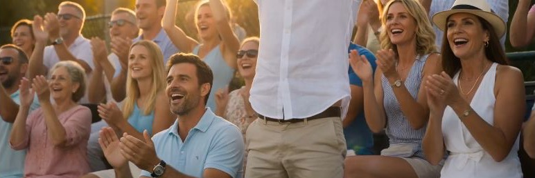
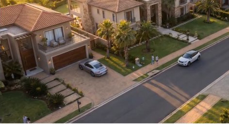
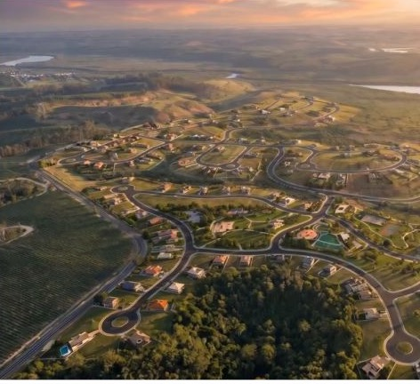

Roteiro & manifesto
A narrativa do empreendimento, escrita para vender.
Seu lançamento pode ter um filme de cinema em até 21 dias. Fale com a Guri.
Filmes, manifestos e documentários de lançamento criados com IA cinematográfica. O que antes levava 90 dias e seis dígitos, agora leva semanas — e uma fração do custo.
Um loteamento de alto padrão que ainda não existia precisava ser vendido como desejo, paisagem e estilo de vida. Sem drone, sem set, sem diária de filmagem: aéreas, lifestyle, masterplan e portaria construídos com IA frame a frame, sob direção criativa da Guri.
Se o empreendimento ainda não saiu do papel, o filme sai primeiro.
Quero um filme assimDireção de cinema para resultados de venda.
A narrativa do empreendimento, escrita para vender.
Olhar de branding em cada frame.
O terreno visto do céu, sem drone.
Pessoas vivendo o que ainda vai existir.
O projeto inteiro em movimento.
Voz e som sob licença, prontos para mídia.
16:9, 9:16, cortes de 15/30/60s para tráfego.
O filme dentro da marca do empreendimento.
Loops para TV, telão e tablet de vendas.
Master + variações, direitos definidos em contrato.



Produtora, drone, elenco, locação, diárias. O filme consome a verba que era da mídia.
O lançamento tem data. A produtora tem agenda. Raramente as duas coincidem.
O empreendimento ainda não existe. E maquete genérica não vende desejo.
IA sem direção gera vídeo genérico — e vídeo genérico não vende loteamento de alto padrão. A Guri é um studio de branding: marcas, produtos, design, narrativa e estética juntos. O filme nasce da identidade do empreendimento, não de um prompt solto.
Como funciona, em 4 movimentos:
Briefing do empreendimento, público, VGV, masterplan e materiais existentes.
Narrativa, decupagem e direção de fotografia aprovadas antes de gerar cenas.
Cada cena criada, curada e refeita até parecer filmada.
Cor, som, locução, motion da marca e masterização para cada canal.
Incorporadoras e loteadoras de alto padrão
Imobiliárias boutique com lançamentos exclusivos
Urbanizadoras e desenvolvedoras de comunidades planejadas
Houses de marketing imobiliário de braço comercial
Veja o filme no topo da página. A resposta está lá.
Ficam definidos em contrato, com entregas preparadas para mídia, apresentação comercial e canais digitais.
Sim. A identidade existente entra na direção visual, motion, tipografia, assinatura e aplicação de marca.
Ajustamos cenas e narrativa dentro do fluxo aprovado, sem depender de refilmagem ou nova diária de set.
Funciona. A IA pode complementar filmagens reais, simular lifestyle, criar cenas impossíveis e adaptar versões por canal.
O vídeo final entra aqui quando o arquivo ou embed estiver definido.